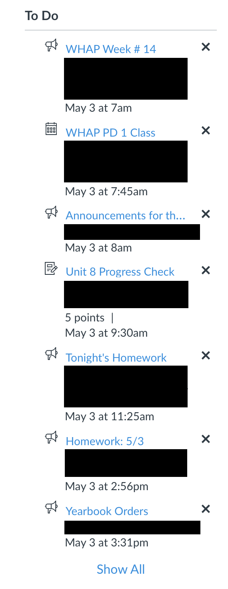
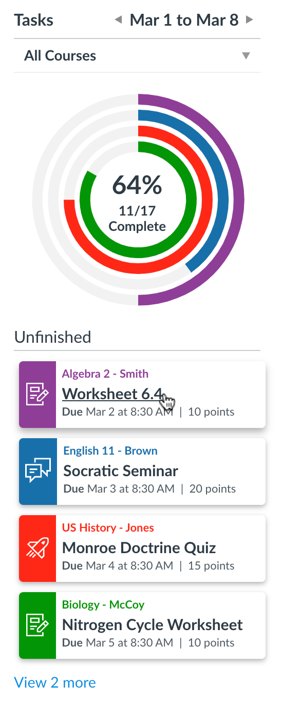
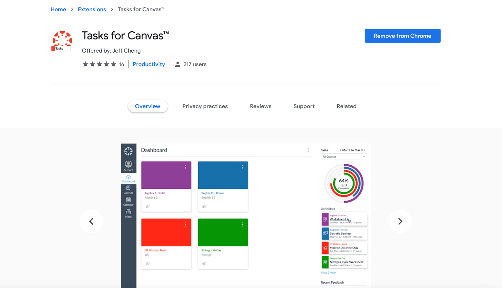

Sponsored by Art of Problem Solving

Automation
10pts
No code
An introduction to automation principles
Let’s be honest, humans are lazy. We procrastinate, save things for later, and don’t do our homework until 11:00 pm on a Sunday. But being lazy isn’t always a bad thing. In fact, our intrinsic laziness has been one of the most potent motivators behind innovation throughout history. We build tools, machines, and other various gadgets to raise our quality of life. Cars, factory machinery, and coffee makers were all made to speed up our lives, allowing us to spend less time on monotonous tasks and be more productive in the long run. With computers and programming, it’s now easier and more efficient than ever to automate simple, tedious tasks.
Take a look at one of the most dull tasks we regularly experience: getting homework done. Although actually automating the homework itself is complex and will probably hurt you in the long run, we can easily automate other aspects of the process. For example, It would be convenient to have a simple to-do list of all our assignments to quickly know how much we still have to do. Luckily, Canvas all of this for us already:

Unfortunately, most of us only care about our assignments, not class announcements or meet times. And clicking on all the Xs every week is way too much work. So we can go a step further and build a web extension to modify the to-do list to show us what we want.
To get the actual data that we want, we can make Application Programming Interface (API) calls to the Canvas API to request our assignment information. An API call is just a request by a client (your web browser) for some data from a server (Canvas). APIs are created by an app’s developers so that other 3rd party developers can interact with an application and develop extensions using it, often to automate or extend the original application’s functionality. Our web extension can automatically request this data from the API and display it, so we don’t have to find it manually. Our final result is below:


Although we still have to get our homework done, we can now access our assignments in the same place and easily track our progress throughout the week, saving us the time of monotonously sifting through course pages to find them.
Here’s another example: your email inbox is probably filled with emails from all kinds of businesses, schools, newsletters, and whatever found its way into your inbox. You probably don’t want to read a single one because many of them weren’t specifically meant for you; an automated system just sent them with you on their email list. These automated systems can even send you personalized emails based on any data they have about you, but at the end of the day, you can tell pretty quickly whether a real person wrote an email. Similarly, social media posts on large accounts are often posted automatically at scheduled times, calendar reminders display notifications when necessary, and alarm clocks wake you up at the same time every morning. Simple scheduled automation systems like these streamline our workflow and allow us to focus on other, more important things instead of having to remember to do the same routine, scheduled tasks.
Most automation systems usually run as background processes on a computer, server, phone, or other electronic devices. A background process just means that the process doesn’t require user input, so it can just run in the background without disrupting a user. This is especially common with automation because the point of automation is to minimize user input: the best-automated processes are those that don’t require a person to lift a single finger.
The beauty of automation partly lies in abstraction. Ideally, once a process is automated, you no longer have to think about it. You don’t need to think about it or even know how it works, just that it does. This is the main idea behind abstraction: you should only know what you need to know. There are probably hundreds or even thousands of background processes running on your device at any given point in time. Each process automates some specific task, so you don’t have to think about it or even know what it is. As a result, you don’t need to understand how a computer works to use one. Ultimately, automating routine tasks gives us more time to focus on more meaningful and challenging tasks that interest us, enabling us to be more productive and live fuller lives. Or be even lazier. Whichever you prefer.